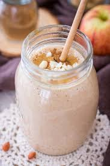

Apple Smoothie

Description
This is my recipe for an apple smoothie that I drinked a few days ago.
Ingredients
- One Apple
- A few tablespoons of peanut butter (I like alot in mine)
- Milk or Almond Milk
- Oatmeal
- Cinnamon
- Cocoa Powder
- Berries (Optional)
Steps
- Slice apple into small pieces
- Add pieces into blender
- Add peanut butter into blender
- Add oatmeal into blender
- Add cinnamon and cocoa powder
- Add berries into blender (Optional)
- Then add milk or almond milk.
- Blend until smoothie texture
- Enjoy!